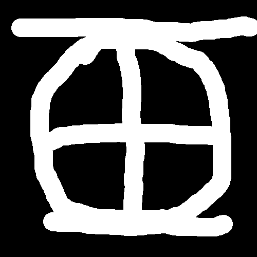
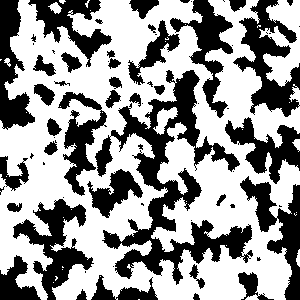
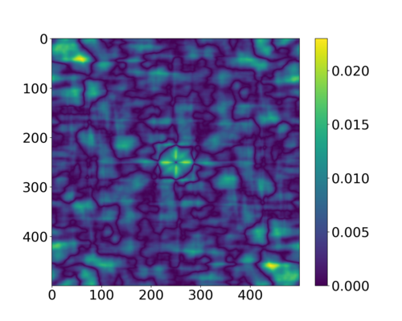

Example
The following example takes an original \(500 \times 500\) image and reconstructs it from its autocorrelation function in 1.5M steps of annealing.
(defpackage annealing-test
(:use #:cl #:recon)
(:export #:test-annealing-w/-init
#:read-image))
(in-package :annealing-test)
(defun read-image (name dimensions)
"Read a binary file into an array of octets."
(let* ((array (make-array dimensions :element-type 'bit))
(displaced (make-array (reduce #'* dimensions)
:element-type 'bit
:displaced-to array
:displaced-index-offset 0)))
(with-open-file (input name :element-type '(signed-byte 8))
(read-sequence displaced input))
array))
(defun make-modifier ()
"Create a modifier which will sample two pixels at the boundary
between phases (zeros and ones) and belonging to two different phases
and swap their values."
(make-instance 'swapper
:sampler (make-instance 'interface-sampler)))
(defun test-annealing-w/-init (array steps &key (t0 1f-5))
"Run simulation of annealing for STEPS steps. ARRAY is the original binary
image. T0 is initial temperature of the system."
(declare (type (simple-array bit) array))
(with-gpu-objects ((ctx gpu-context) ; Create GPU context
;; Calculate correlation functions of the original image
(target corrfn-s2
;; GPU context
:context ctx
;; Original array. Alternatively you can
;; specify :S2 and :DIMENSIONS for
;; precalculated autocorrelation
:array array
;; Autocorrelation is calculated with
;; periodic boundary conditions
:periodic-p t)
;; Create an image which will be reconstructed
(recon image-s2
;; GPU context.
:context ctx
;; Initial approximation for reconstruction
:array (initialize-random array)
;; Must match :PERIODIC-P for target
:periodic-p t)
;; Metric object which measures difference
;; between the target's and the reconstruction's
;; autocorrelation functions
(metric metric-s2
:context ctx
:recon recon
:target target))
(let (;; Cost objects are used for calculation of the cost
;;function which is minimized during annealing. COST-S2 is
;;backed my METRIC-S2 object.
(cost (make-instance 'cost-s2 :metric metric))
;; Create cooldown schedule
(cooldown (aarts-korst-cooldown :n 25000 :α 1.0))
;; Make modifier object
(modifier (make-modifier)))
(values
;; RUN-ANNEALING runs simulated annealing with initial temperature T0
;; iterating STEPS times and returns a list containing values of the cost
;; function at each step
(run-annealing recon t0 steps
:cost cost
:cooldown cooldown
:modifier modifier)
;; Get reconstructed image
(image-array recon)))))
The original image:  The reconstruction:  Point-wise difference in autocorrelation: 